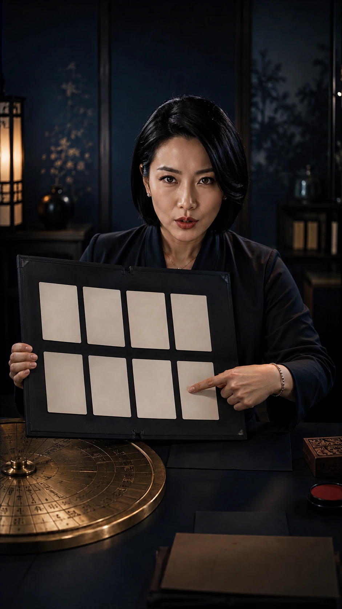
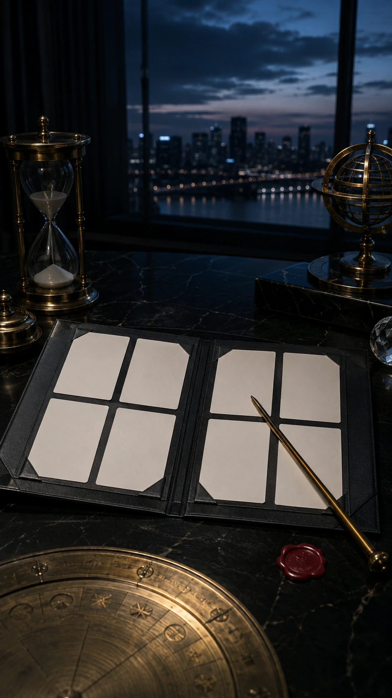
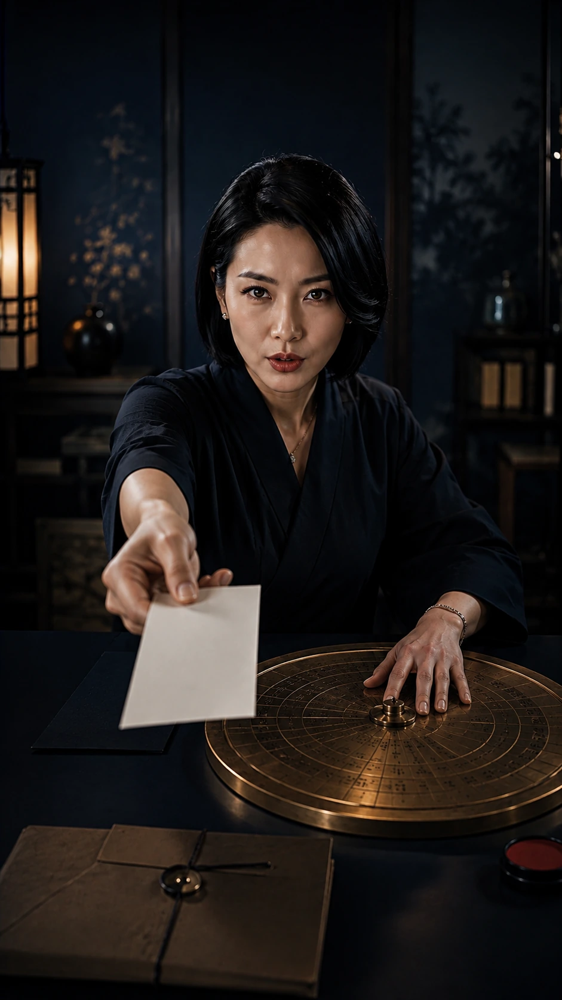

운명상회
DETAIL REPORT
입춘 기준

YEAR FLOW
2027년,
한마디로 어떤 해야?
올해는 먼저 한 해 결을 잡고, 그다음 일·돈·사람과 달별 흐름을 나눠 읽습니다.
Reading Point
한 줄 결론기준을 잡는 해
확인 근거신년 일간별 한해결
지금 행동첫 3개월 계획 나누기

RHYTHM
강약은 숫자 대신
구간으로 봅니다
올해 흐름은 한 점으로 찍지 않고, 밀 구간과 다질 구간으로 나눠 읽습니다.
CHECK
작년의 방식과
올해의 방식을 나눕니다
같은 선택을 반복할지, 순서를 바꿀지부터 확인합니다.
오늘 볼 것

IPCHUN
달력의 시작과
흐름의 시작은 다를 수 있습니다
1월의 기분과 입춘 뒤 리듬을 분리해 첫 계획을 다시 봅니다.
BASIS
한 해 결은
근거별로 쪼개서 봅니다
일, 돈, 사람, 달별 흐름을 같은 말로 뭉개지 않습니다.
근거와 해석

MONTHS
열두 달은
각각 다른 문장으로 봅니다
잘 풀리는 달과 쉬어갈 달을 한 표 안에서 섞지 않습니다.

PREVIEW
올해 일, 돈, 사람은
따로 움직입니다
한 축이 빠르다고 다른 축까지 같은 속도라고 보지 않습니다.

SHIFT
판이 바뀌는 느낌은
생활에서 먼저 보입니다
큰 변화처럼 느껴지는 지점도 실제 행동 조건으로 나눠 둡니다.

SETUP
새해 세팅은
작게 시작합니다
목표를 늘리기보다 첫 3개월에 남길 루틴을 좁힙니다.

RESET
지난해는 접고
남길 기준만 가져갑니다
기원보다 정리, 불안보다 다음 행동을 남기는 쪽으로 닫습니다.

NEXT
다음 항목도
같은 기준으로 이어집니다
목록의 10개 항목은 같은 목차 안에서 각각 다른 상세로 열립니다.

QUIET CLOSE
불안보다
판단을 남깁니다
특정 사건을 단정하지 않고, 한 해를 준비하는 기준으로 읽습니다.